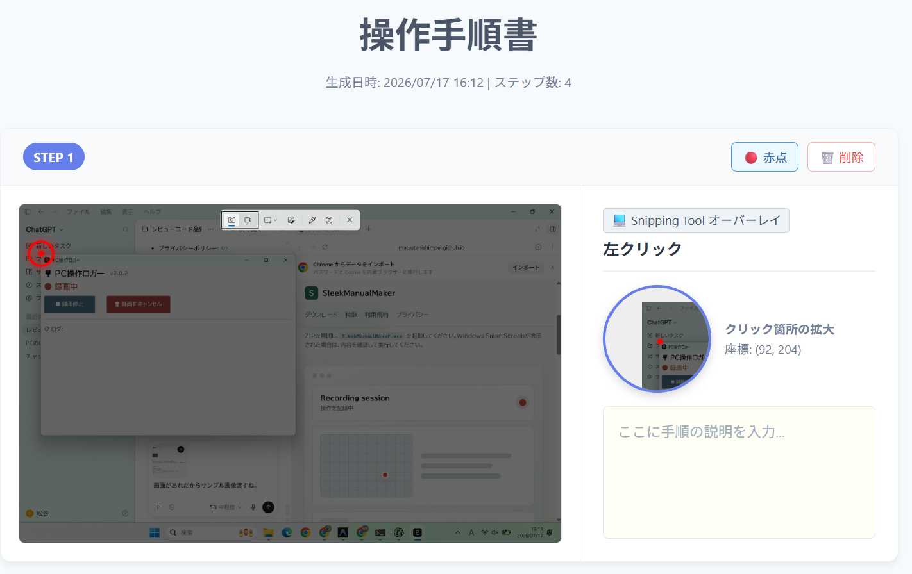
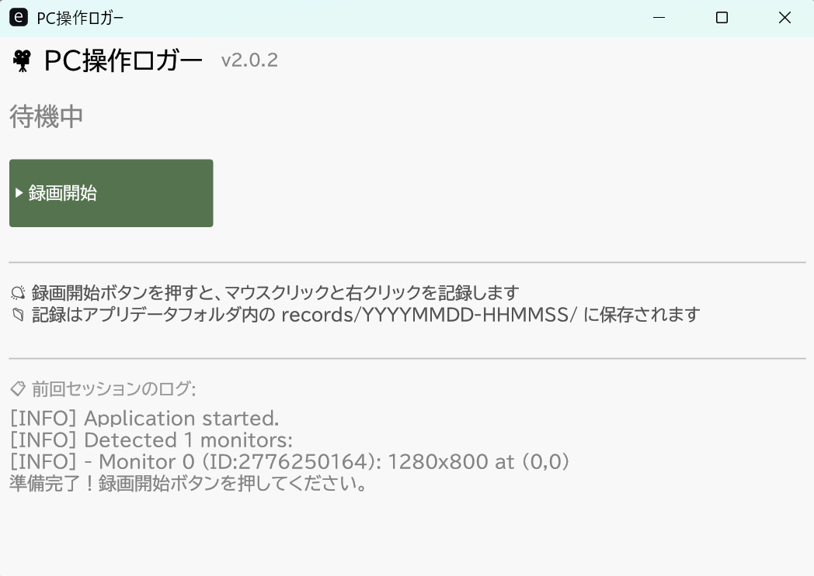
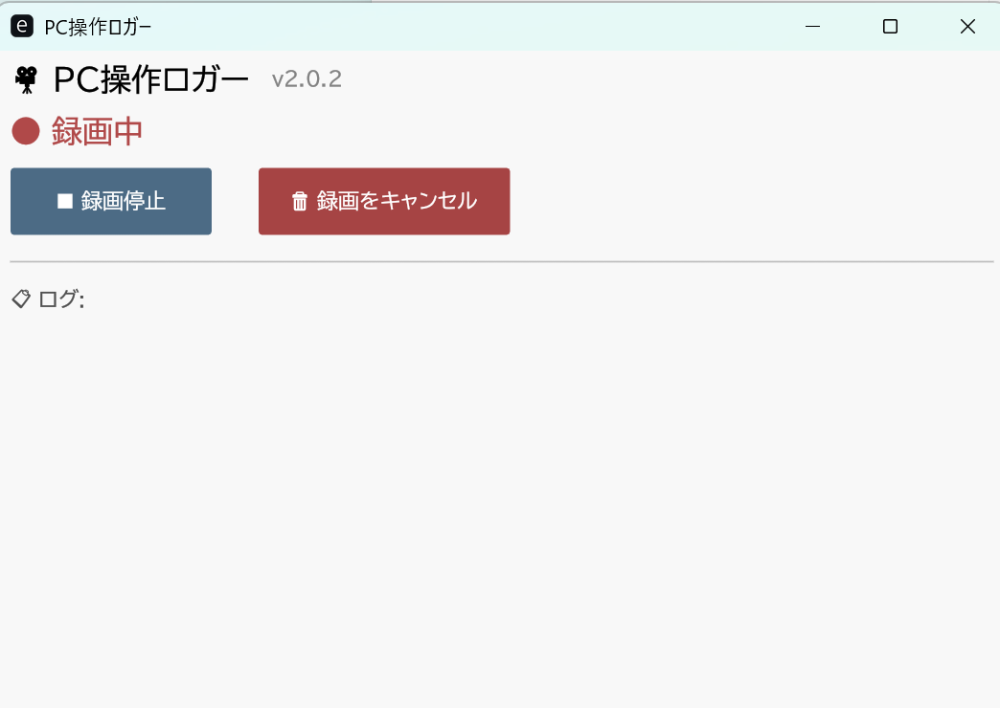
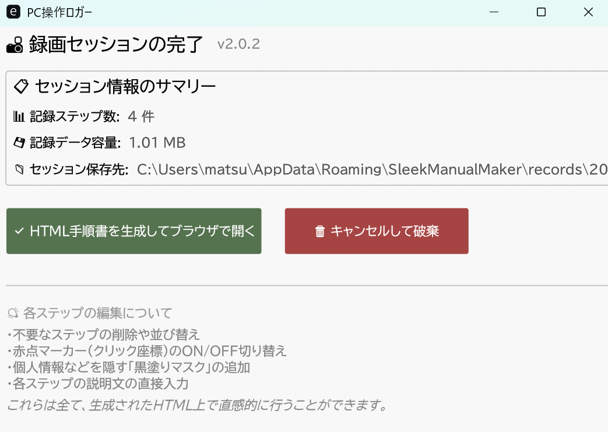

操作ごとに画面を記録
クリックやキー操作を検知し、その時点のスクリーンショットとログを保存します。
Windows向け PC操作記録ツール
SleekManualMakerは、クリックやキー操作のタイミングで画面を記録し、 画像を埋め込んだHTML手順書を作成するデスクトップアプリです。
ZIPを展開し、SleekManualMaker.exe を起動してください。Windows SmartScreenが表示された場合は、内容を確認して実行してください。

Features
クリックやキー操作を検知し、その時点のスクリーンショットとログを保存します。
停止後に件数や容量を確認し、不要な記録はキャンセルできます。
生成された手順書はブラウザで開き、説明文の追記や不要ステップの削除ができます。
スクリーンショットをBase64で埋め込むため、HTMLファイル単体で共有しやすくなります。
Screens



Usage
Before Use
このアプリは画面内容と操作ログを保存します。個人情報、社外秘資料、認証情報などが画面に表示されている状態で記録しないよう注意してください。 詳細は プライバシーポリシー と 利用規約 を確認してください。